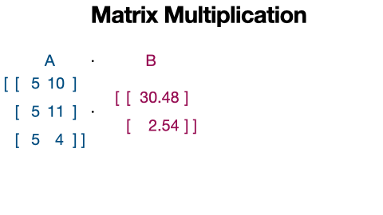
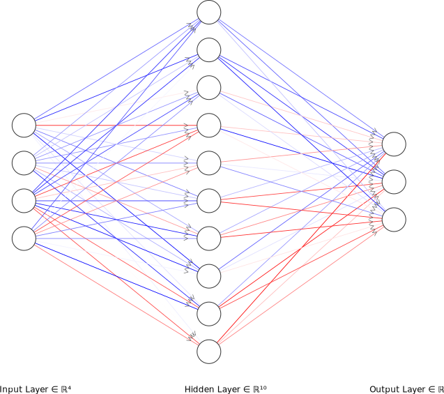
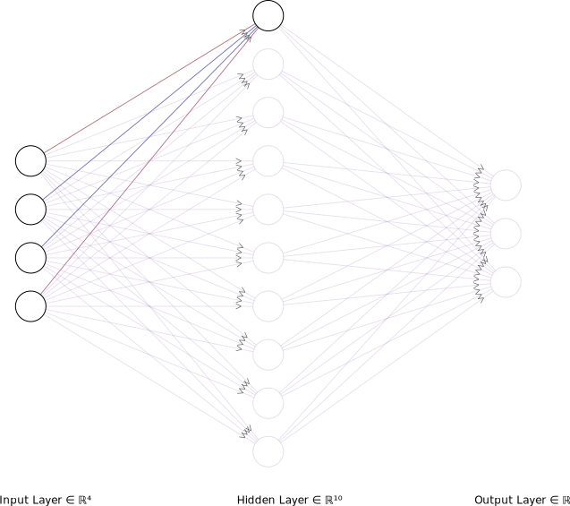

Matrix Multiplication
Neural Networks
In the lecture notes on gradient descent, we already saw the use of matrix multiplication used to do linear regression, and I framed it as a kind of extension of dot products. Let’s expand upon that.
What is Matrix Multiplication used for?
Matrix multiplication is what makes almost everything work.
for thing in set_of_all_things:
if matrix_multiplication in thing:
works = True
else:
works = Maybe?It’s so fundamental to so many areas of mathematics, statistics, machine learning, etc this is how mathematicians talk about trying to discover new matrix multiplication algorithms:
“It’s hard to distinguish scientific thinking from wishful thinking,” said Chris Umans of the California Institute of Technology. “I want the exponent to be two because it’s beautiful.”
“Exponent two” refers to the ideal speed — in terms of number of steps required — of performing one of the most fundamental operations in math: matrix multiplication. If exponent two is achievable, then it’s possible to carry out matrix multiplication as fast as physically possible. If it’s not, then we’re stuck in a world misfit to our dreams. —Quanta Magazine
Any regression model, principle components analysis, neural network, word2vec model, automatic speech recognition, self driving car, and even this rotating map of Kentucky, all use matrix multiplication for their basic operation.
How does it work?
We’ll be using numpy to do matrix multiplication, and we’ll revisit the task of converting heights in feet and inches to centimeters. To convert feet to centimeters, we need to multiply it by 30.48, and to convert inches to centimeters, we need to multiply them by 2.54. Let’s set up a column vector with these values
import numpy as npfoot_in_tocm = np.array([[30.48],
[ 2.54]])
foot_in_tocm array([[30.48],
[ 2.54]])I’ve called it a “column” vector, because it a actually has two rows, and one column.
foot_in_tocm.shape(2, 1)And let’s set up a matrix of heights in feet and inches for an away mission with Jen Luc Picard, Lt. Data, and Deanna Troi. We’ll have one row per away team member, and one column for the foot component of their height and another for the inches component of their height.
heights_ft = np.array([[5, 10],
[5, 11],
[5, 5]])In order to convert each away team member’s height into centimeters, we need to
Multiply their feet component by 30.48
Multiply their inches component by 2.54
Sum the result.
a.k.a a dot product. We’ve got heights as rows…
heights_ft[0, ]array([ 5, 10])… and the conversion factors as columns…
foot_in_tocmarray([[30.48],
[ 2.54]])But this is the usual organization of values for doing a dot product. You take the values across columns of matrix A, multiply them by the values across rows in matrix B, and sum up the result.
np.dot(heights_ft[0, ], foot_in_tocm)array([177.8])So, Jean Luc Picard is 177.8 centimeters tall. If we take the dot product of the whole heights_ft matrix, without doing any indexing, and foot_in_tocm we’ll get back a column vector of every away team member’s height.
np.dot(heights_ft, foot_in_tocm)array([[177.8 ],
[180.34],
[165.1 ]])There’s also a convenience operator built in to do matrix multiplication: @
heights_ft @ foot_in_tocmarray([[177.8 ],
[180.34],
[165.1 ]])What just happened.
Matrix multiplication goes rowwise down the first matrix, and pulls out a row. Then it takes the dot product of that row and the first column of the second matrix. Then, the result gets saved as the first row, first column of the result matrix.

Some rules for matrix multiplication
Matrix multiplication isn’t “commutative”. That is to say, while heights_ft @ foot_in_tocm works, if we flipped the arguments to foot_in_tocm @ heights_ft, we’ll get an error.
foot_in_tocm @ heights_ftError in py_call_impl(callable, dots$args, dots$keywords): ValueError: matmul: Input operand 1 has a mismatch in its core dimension 0, with gufunc signature (n?,k),(k,m?)->(n?,m?) (size 3 is different from 1)This is because the number of columns in the first matrix always need to match the number of rows in the second matrix. You can kind of visualize this requirement by lining up the matrix .shapes like this:
✅ Good!
Matrix A shape (3, 2)
Matrix B Shape (2, 1)
🚫 Bad!
Matrix B shape (2, 1)
Matrix A shpe (2, 3)The resulting matrix will have the same number of rows from matrix A and the same number of columns as matrix B, which we can also visualize like this:
Matrix A shape (3, 2)
Matrix B Shape (2, 1)
Result Shape (3, 1)A more interesting conversion matrix
To convert feet and inches in to centimeters, we created a matrix with a two rows, and one column. Let’s say we wanted to simultaneously convert the crew’s heights into meters and into yards. We just need to add columns to the conversion matrix with what we need to multiply feet and inches by for these other measurement units.
## cm m yd
foot_in_other = np.array([[30.48, 0.3048, 1/3], # foot multiplier
[2.54, 0.0254, 1/36]]) # inch multiplierThen, we matrix multiply the
heights_ft @ foot_in_otherarray([[177.8 , 1.778 , 1.94444444],
[180.34 , 1.8034 , 1.97222222],
[165.1 , 1.651 , 1.80555556]])The way this relates to neural networks
Let’s start with an imaginary task of trying to guess which species a penguin is, based on one of 4 body measurements. This code loads the penguins data set and pulls out a matrix of the body length measures, and a vector of species.
Note
The peng dataset is in a format called a pandas dataframe that we haven’t gotten a chance to learn about yet.
from palmerpenguins import load_penguins
peng = load_penguins()body_meas = peng[["bill_length_mm", "bill_depth_mm",
"flipper_length_mm", "body_mass_g"]].\
dropna()
species = peng.dropna()["species"]Let’s pull out one row of body measurements for an individual penguin
one_penguin = np.array(body_meas)[0,:]
one_penguinarray([ 39.1, 18.7, 181. , 3750. ])With our neural network, we’ll want to use these 4 Input values to try to predict which one of 3 species this individual penguin is, ad we’ll try to do that with a “hidden” layer of 10 nodes. That kind of model is conventionally represented like so:

To get the value that’s supposed to be in the first hidden layer node, we multiply each of the 4 body measurement by some number, then sum them together.

That should be starting to sound like a familiar process! To do that for a single node, we just do a dot product, but to repeat it simultaneously for all hidden layer nodes, we need a matrix of weights to do matrix multiplication with. To work out the shape of the matrix we need, we can go back to thinking about how the shapes of the matrices we multiply relate to the outputs
Input shape (1, 4)
weights shape? (?, ?)
hidden shape (1, 10)It looks like we need a 4 by 10 matrix to convert the 4 input data dimensions into 10 hidden dimensions.
to_hidden_layer = np.random.random((4, 10))
hidden_layer = one_penguin @ to_hidden_layer
hidden_layerarray([3175.93114323, 2702.37376047, 1110.83116497, 3804.36145994,
2313.42332874, 932.48112235, 1124.20627424, 2613.57451926,
3782.15394471, 2235.27438217])Then, we need translate the values for these 10 hidden nodes into 3 values for the output nodes.
hidden shape (1, 10)
weights shape? ( ? ?)
output shape (1, 3)Looks like we’ll need a 10 by 3 matrix.
to_output = np.random.random((10, 3))
output = hidden_layer @ to_output
outputarray([13675.30911592, 14396.21097368, 12356.73246635])And then, we’d probably convert the output to probabilities using softmax, and whichever node has the largest probability we choose as the species.
Things to note
First, a nifty thing is that the matrices we created to convert one penguin’s data to 3 output nodes will work just as well converting an arbitrary number of penguin’s data to output nodes.
input (N, 4)
hidden weights (4, 10)
hidden nodes (N, 10)
output weights (10, 3)
output (N, 3)np.array(body_meas)[0:6, ] @ to_hidden_layer @ to_outputarray([[13675.30911592, 14396.21097368, 12356.73246635],
[13861.02138365, 14592.08783466, 12525.73684929],
[11994.01605001, 12649.71028111, 10875.00265924],
[12669.50632969, 13353.26275848, 11474.57692904],
[13363.04411164, 14076.829745 , 12089.55057138],
[13240.78045567, 13942.14368914, 11969.5783128 ]])The second thing to note is that these numbers we just got, based on random weights in the matrices, are obviously bad. But, they can be improved with gradient descent!